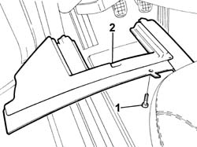
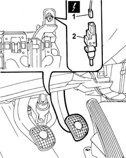

1060G42 CLUTCH pedal SWITCH - R.R.
- Path
- Procedures > 10 ENGINE > 1060 DIESEL FUEL INJECTION SYSTEM > 1060G DIESEL INJECTION PRESSURE PUMP ELECTRONIC CONTROL > 1060G42 CLUTCH pedal SWITCH - R.R.
- Kind
- repair procedure (removal / refitting; the operation number is the code)
- Applies to
- engines: 2.4 JTD 10V; all production periods
- Interactive page
- https://sloeber94.github.io/elrnDB-lThss/en/#/100725
Applies to: all engines; all production periods
 Removing
Removing
 Refitting
Refitting- Disconnect the negative battery terminal.
1. Undo the fixing bolts.
2. Remove the trim under the dashboard, driver's side.

Applies to: all engines; all production periods
1. Disconnect the electrical connection for the clutch pedal switch.
 | Description | Connector |
|---|---|---|
1 | Switch on clutch pedal | I031 |
2. Undo and remove the switch from the clutch pedal.

Applies to: all engines; all production periods
Refitting
Removing- Fit the switch on the clutch pedal.
- Connect the electrical connection.
| Description | Connector |
|---|---|---|
. | Switch on clutch pedal | I031 |
- Fit the trim under the dashboard, driver's side.
- Connect the negative battery terminal.